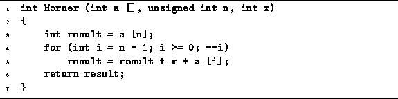

Data Structures and Algorithms
with Object-Oriented Design Patterns in C++
Data Structures and Algorithms
with Object-Oriented Design Patterns in C++
In this section we apply Axioms  , , and
to the analysis of the running time of a program
which evaluates the value of a polynomial.
I.e., given the n+1 coefficients
, , and
to the analysis of the running time of a program
which evaluates the value of a polynomial.
I.e., given the n+1 coefficients  ,
and a value x, we wish to compute the following summation
,
and a value x, we wish to compute the following summation

The usual way to evaluate such
polynomials is to use Horner's rule ,
which is an algorithm to compute the summation without
requiring the computation of arbitrary powers of x.
The algorithm to compute this summation is given in Program .
Table gives the running times of each of the
executable statements in Program .

Program: Program to compute  using Horner's rule
using Horner's rule
| statement | time |
| 3 | |
| 4a | |
| 4b | |
| 4c | |
| 5 | |
| 6 | |
| TOTAL | |
| |
Summing the entries in Table
we get that the running time, T(n),
of Program is
where  and
and  .
.
 Copyright © 1997 by Bruno R. Preiss, P.Eng. All rights reserved.
Copyright © 1997 by Bruno R. Preiss, P.Eng. All rights reserved.